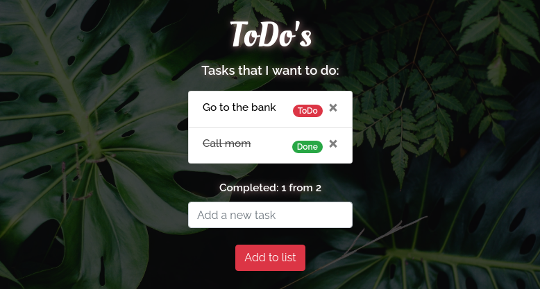

To Do App
The ToDo app is an app for documenting daily tasks.
This is a one page React App that was done using create-react-app. The
app saves the users input to their browsers local storage so the status
of the tasks are saved even if they close the browser.
Technologies:
- - React
- - HTML
- - CSS
- - SASS
- - bootstrap
GitHub Project Repository
App preview
